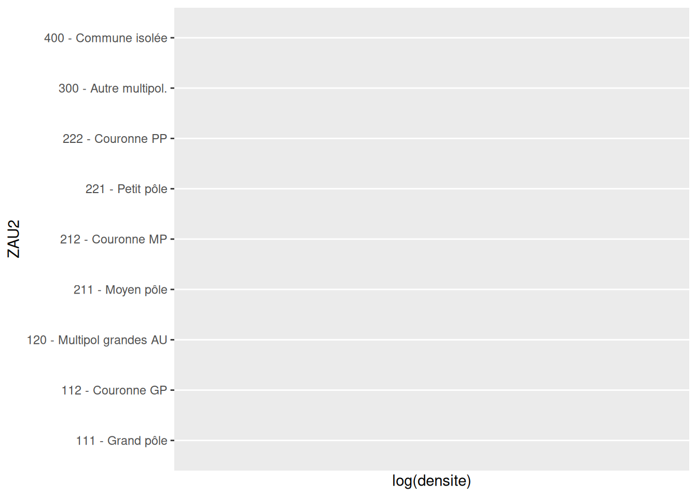

Chapitre 8 Lien variable quantitative - variable qualitative
8.1 Statistiques en fonction d’un facteur
Par exemple, calculer la population totale (moyenne, médiane…) des communes pour chaque type ZAU.
## # A tibble: 9 × 4
## ZAU pop_moy dens_med nb_com
## <chr> <dbl> <dbl> <int>
## 1 111 - Grand pôle (plus de 10 000 emplois) 11956. 4022. 3285
## 2 112 - Couronne d'un grand pôle 1034. 556 12297
## 3 120 - Multipolarisée des grandes aires urbaines 883. 452 3962
## 4 211 - Moyen pôle (5 000 à 10 000 emplois) 4322. 1860 456
## 5 212 - Couronne d'un moyen pôle 455. 338 815
## 6 221 - Petit pôle (de 1 500 à 5 000 emplois) 2826. 2240 888
## 7 222 - Couronne d'un petit pôle 293. 222 582
## 8 300 - Autre commune multipolarisée 500. 296 7021
## 9 400 - Commune isolée hors influence des pôles 418. 210 73838.2 Eléments théoriques
- Soit X une variable continue, et Y \(\in \{1, ..., k\}\) une variable qualitatives à k modalités
- Dans chaque classe j : \(\bar{X_j}=\mathbb{E}(X/Y=j)\) et \(\sigma_j^2 = \mathbb{V}(X/Y=j)\)
- Variance intraclasse : \(V_{intra} = \dfrac{1}{n}\sum_{j=1}^k n_j \sigma_j^2\), moyenne (pondérée) des variances de chaque classe
- Variance interclasse : \(V_{inter} = \dfrac{1}{n}\sum_{j=1}^k n_j (\bar{x_j}-\bar{x})^2\), variance (pondérée) des moyennes de chaque classe
- Rapport de corrélation : \(\eta^2 = \dfrac{V_{inter}}{V_{Totale}}= \dfrac{V_{inter}}{V_{inter}+V_{intra}}\)
- C’est le \(R^2\) de l’anova de X par Y
8.3 Représentation graphique
Pour réprésenter graphiquement le croisement d’une variable qualitative avec une variable quantitative, il existe plusieurs moyens.
- La fonction
geom_boxplot()produit la boîte à moustaches pour visualiser, pour chaque modalités de la variable qualitative, la distribution de la variable quantitative. La barre la plus basse de la boîte indique Q1 (pourcentile 25%), le trait au milieu indique la médiane, et la barre supérieur de la boîte indique Q3.
dat <- dat %>%
mutate (densite = P14_POP / SUPERF,
log_dens = log10 (densite+0.00000001))
ggplot (data = dat, aes (y = log (densite), x = ZAU2, fill = ZAU2)) +
geom_boxplot () +
coord_flip () + # pour plus de lisibilité
theme (legend.position = "none") # supprime la légende
- Le violinplot (fonction
geom_violin()) fonctionne sur le même principe. Les boîtes à moustaches sont remplacées par des graphiques en violon, qui représentent la densité de distribution de la variables quantitatives.
ggplot (data = dat, aes (y = log (densite), x = ZAU2, fill = ZAU2)) +
geom_violin () +
coord_flip () +
theme (legend.position = "none")
8.4 Calcul du rapport de corrélation
Le rapport de corrélation est une mesure de la force de la liaison existant entre une variable quantitative et une variable qualitative. Il est similaire au coefficient de corrélation. Il se définit comme suit : \(\hat{\eta}^2 = \frac{VarInter}{VarTotale}\).
Pour le calculer, on peut appliquer la fonction etaSquared() sur un objet de type anova.
Si on veut quantifier le lien éventuel entre la densité de population et les ZAU, on fait donc :
## eta.sq eta.sq.part
## ZAU2 0.1689881 0.1689881